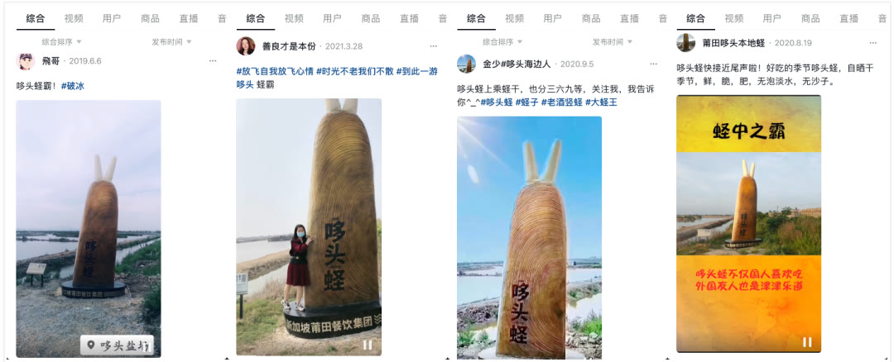

01 · 定心
先明确品牌为何存在、靠什么增长
全球扩展之前，企业需要一套稳定判断标准。品牌定心把地域食材、餐饮价值和长期事业组织起来，减少市场变化中的方向摇摆。

02 · 符号
用水波纹建立可全球使用的识别
水波纹连接莆田地域与食材文化，并能适应门店、餐具和传播等不同载体。符号不是单张图，而是一套可重复的视觉系统。

03 · 统一
让超级符号走向南洋
海外市场不另做一套陌生形象，而是统一核心符号、色彩和语言，同时适配当地门店条件，让品牌扩张继续积累原有资产。

04 · 经营
用食材节建立年度品牌节奏
持续七年的食材节把食材优势、产品研发和传播活动组织为固定节拍。顾客逐年形成期待，企业也获得可重复执行的营销框架。

05 · 文化
让莆田蓝与地域文化共同沉淀
文化母体为全球传播提供共同内容，莆田蓝则在不同场景中保持视觉一致。文化深度与管理标准共同支撑全球品牌。
